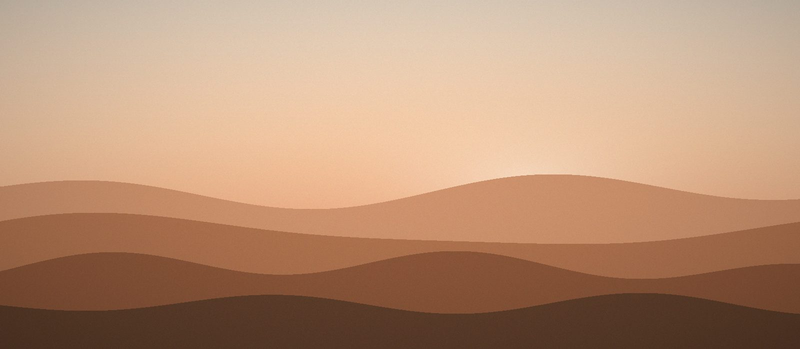
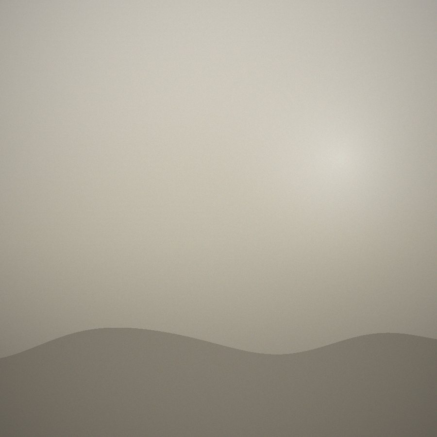

在文章里放图片：四种排版和一个点击放大

所有图片都放在 assets/images/ 目录里，正文用相对路径
../assets/images/文件名.jpg 引用。下面四种排版复制代码就能用，
配图都是生成出来的示意图，你可以直接删掉换成自己的照片。
一、普通单图：和正文同宽
最常用的一种。宽度自动跟着正文走，手机上也是满宽，不会溢出。
<figure>
<img src="../assets/images/example-inline.jpg"
width="1200" height="800"
alt="这里写图片内容的描述">
<figcaption>图片下方的小字说明</figcaption>
</figure>
width 和 height 一定要填成图片的真实像素尺寸。
浏览器据此提前留出高度，图片加载时页面不会跳一下——这个细节在手机流量下特别重要。
二、通栏大图：在宽屏上撑出正文
风景照、截图这类需要看细节的图，加上 class="wide" 就会在宽屏上
突破正文栏宽，向两侧展开。手机上仍然保持满宽。
<figure class="wide">
<img src="../assets/images/example-wide.jpg"
width="1600" height="900" alt="……">
<figcaption>通栏大图</figcaption>
</figure>三、并排组图：两张或三张一起看
用 class="gallery" 把多张图塞进同一个 figure，它们会自动排成一行；
屏幕不够宽就自动折行，不用你管。

<figure class="gallery">
<img src="../assets/images/a.jpg" width="900" height="900" alt="……">
<img src="../assets/images/b.jpg" width="900" height="900" alt="……">
<figcaption>左：…… 右：……</figcaption>
</figure>
组图里的图片会被裁成正方形（object-fit: cover），
所以原图最好本来就是方的，或者主体在中间，不然会被切掉边缘。
四、点击放大看原图
正文图片和封面图默认都可以点开放大，按 Esc 或点一下背景就关掉，手机上也能用。不用写任何代码。
如果文章列表里放的是压缩过的小图、想点开看原图，给 img 加一个
data-full 指向大图就行：
<img src="../assets/images/小图.jpg"
data-full="../assets/images/原图.jpg"
width="800" height="600" alt="……">上传前的三件事
-
文件名用英文小写加连字符，比如
2026-sunset-lake.jpg。 中文名和空格在有些服务器上会变成乱码或直接 404。 - 先压缩再上传，宽度 1600px、单张 300KB 以内就够了。 用 Squoosh 或 TinyPNG 拖一下即可， 不压缩的话几张手机照片就能让页面慢到没人愿意等。
-
alt一定要写。它是图片加载失败时的替代文字， 也是读屏软件唯一能读到的东西。
完整模板
把下面这段复制进文章，改掉路径和文字就是一个带图段落：
<figure>
<img src="../assets/images/你的图片.jpg"
width="1200" height="800"
alt="一句话描述图片内容">
<figcaption>图注（可以省略）</figcaption>
</figure>图片是博客里最容易让页面变慢的东西，也是最值得花五分钟处理的。 压缩、命名、写 alt，就这三步。